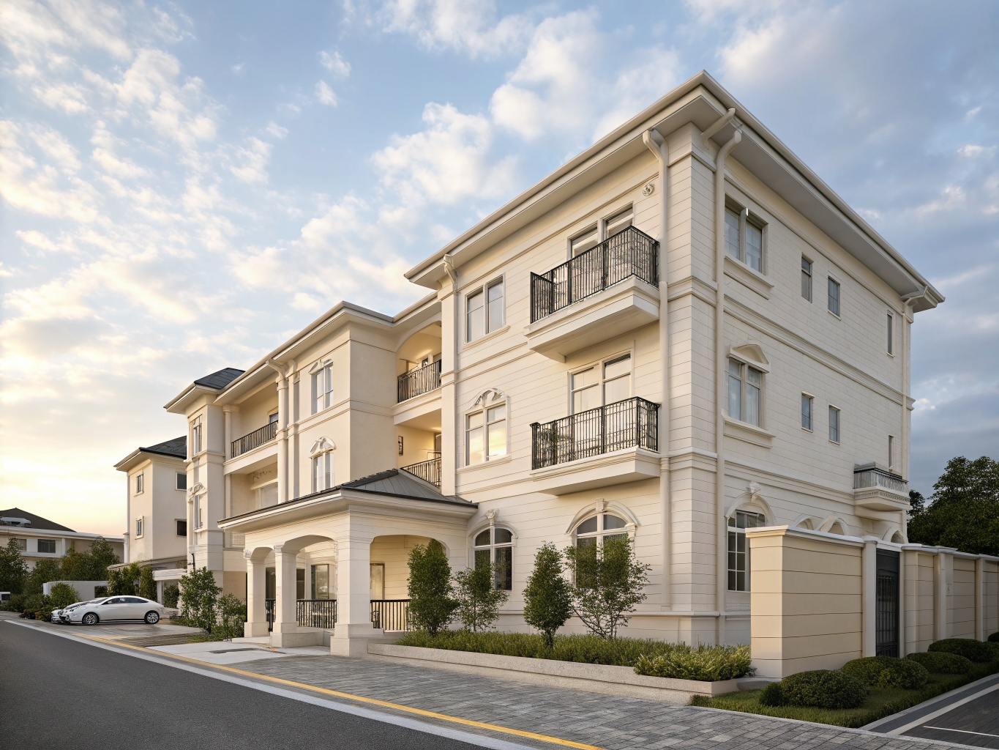

施工内容
築25年のオフィスビルの大規模修繕工事です。外壁のクラック補修、タイル補修、全面塗装、屋上防水改修、シーリング全面打替えを一括で施工しました。テナント様の営業に支障がないよう、工程管理と騒音・粉塵対策に特に配慮しました。
施工のポイント
- テナントビルのため、営業時間外の作業を中心に工程を組成
- 外壁タイルの浮き調査は全面打診検査を実施
- 屋上防水はウレタン通気緩衝工法で改修
- シーリングは変成シリコン系で打替え
| エリア | 大阪府大阪市中央区 |
|---|---|
| 建物種別 | オフィスビル（SRC造・8階建て） |
| 工事内容 | 外壁補修・塗装・屋上防水・シーリング打替え |
| 施工面積 | 外壁約2,000㎡ / 屋上約300㎡ |
| 工期 | 約3ヶ月 |
| 費用目安 | 2,000〜3,000万円 |

施工前

施工後
築25年のオフィスビルの大規模修繕工事です。外壁のクラック補修、タイル補修、全面塗装、屋上防水改修、シーリング全面打替えを一括で施工しました。テナント様の営業に支障がないよう、工程管理と騒音・粉塵対策に特に配慮しました。